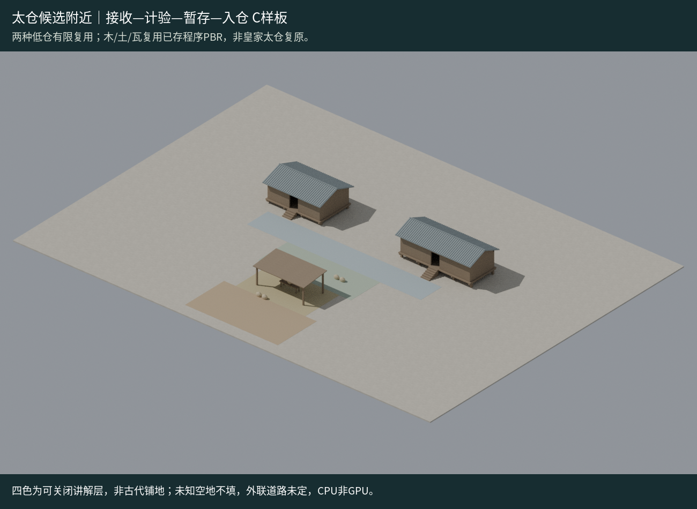

功能组 / 研究中 · 设计评审待完成
仓储作业功能组
REALTIME MODEL模型研究 · 设计待评审

模型预览图 · 代表方案进入详情后仅加载所选模型。拖动旋转、双指或滚轮缩放；方向键旋转，＋/－缩放，R复位，Esc关闭。
两低仓、收纳棚、计验与搬运空间；A/B仓是组内变体，不叠加计数。
坐标/原点：原organized v1是绝对城市场景；新增独立origin-v1从每个场景根减实际锚点[2285.714111328125,0,-3673.468994140625]，原点为C工作区中心地面。部分POSITION仍含绝对数值，由根抵消；不是全buffer中心化或全大世界精度解决。精确回放用契约矩阵，不能自行舍入。
来源版本
organized v1（城市） + origin-v1（独立库）
城市实际引用
已引用organized v1独立节点；外联未建，最近宫缘B关系悬置。
可复用范围与未解决项
72×52研究包络非仓界。箱袋为容积占位不等于粮量；承重/皇家布局/全碰撞/013质量/GPU未验。 origin-v1仅变换根节点，保留二进制及嵌图；两个有限正旋转放置，不允许镜像/非均匀缩放；城市仍引用原绝对坐标版。
有限变体与版本
展开逐型参数、边界与限制
[
{
"name": "仓A",
"planDesignM": [
9,
6
],
"bays": 3,
"floorAbsoluteZ": 0.85
},
{
"name": "仓B",
"planDesignM": [
12,
5
],
"bays": 4,
"floorAbsoluteZ": 1.1
}
]实际资产文件
SHA可核验；独立GLB不自动执行城市补丁。完整原生源另有私有归档，本页不暴露内部ID或临时下载地址。
- organized v1完整组（不叠A/B单仓） · 1786124B
SHA256
b8482824513a101d36eb4c768a4f641e77aaac66c3e834718d7f3964104a644b - origin-v1 · 完整物理组 · 1779988B
SHA256
427749f86e2fb037125a9d1ad4f0978b98848e44350bbf03b8c853b98bdb3a1c - origin-v1 · A单仓（不可叠组） · 976296B
SHA256
60942a4c45332d41a2d47a10f946f6f729fd3e734eadab701b58abbc0e2cd7d2 - origin-v1 · B单仓（不可叠组） · 1050912B
SHA256
bba89b1ec38eb43c82dee547286ab75406be6536ab8e6ea8fa93459b58fd91ca - origin-v1 · 现代讲解层（非物理铺地） · 6876B
SHA256
07b7c65b55e434bbe00b90fe2b6345825849308485bd22ca9112b83941e2e84b